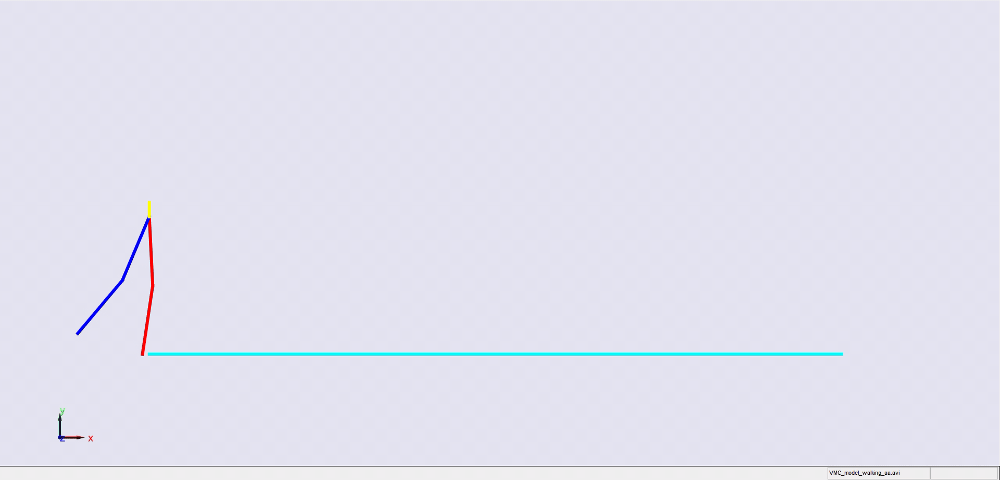
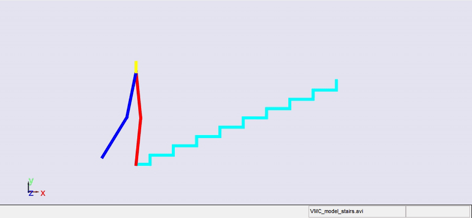
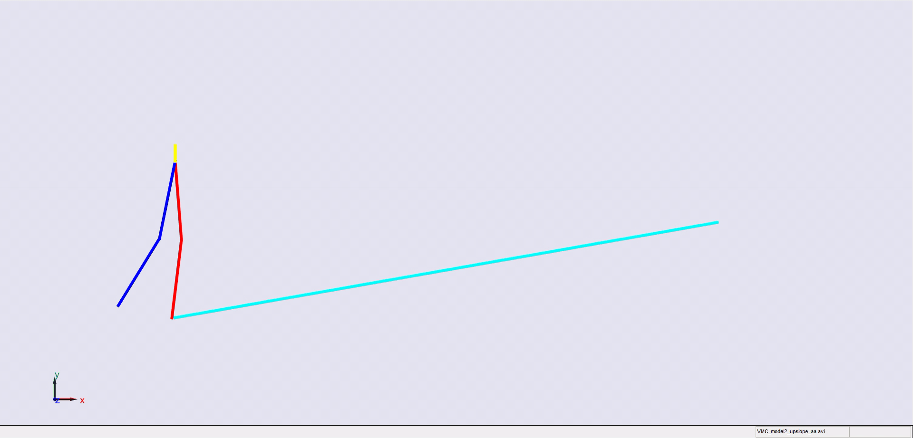
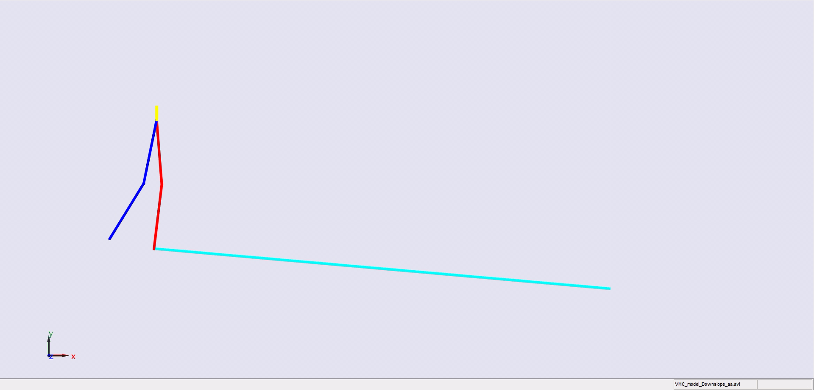

Stair climbing using virtual model control for 2D bipedal locomotion
Saiprasad Arkal, Prasanth Kotaru, Aditya Cherukumudi, and Aarudra Moudgalya
16-868 Biomechanics and Motor control for Legged Robots, Fall 2015
Stair climbing using virtual model control for 2D bipedal locomotion. Virtual model control (VMC) is a versatile and intuitive control approach for legged locomotion. This paper demonstrates a method to extend VMC to humanoid robots for tackling varying scenarios and a glimpse into the advantage of VMC over other methods in terms of parameter tuning. A simplified 5 link humanoid model was designed in SimMechanics and controlled using a virtual model with three components - a granny walker to control the height and orientation of the trunk, a horizontal dash-pot to maintain desired horizontal velocity, and a mechanical linkage to control swing leg motion. This model was made to traverse level grounds, inclined surfaces, and stairs successfully. The results section also describes the ground reaction forces observed. A brief discussion of the different aspects of developing the model is presented.
|  |  |
|  |  |
References
1. Pratt, J., Chew, C. M., Torres, A., Dilworth, P., & Pratt, G. (2001).
Virtual model control: An intuitive approach for bipedal locomotion. The
International Journal of Robotics Research, 20(2), 129-143.
2. Pratt, J., Chew, C. M., Torres, A., Dilworth, P., & Pratt, G. (2001).
Virtual model control: An intuitive approach for bipedal locomotion. The
International Journal of Robotics Research, 20(2), 129-143.
3. Fu, Chenglong, and Ken Chen. ”Gait synthesis and sensory control
of stair climbing for a humanoid robot.” Industrial Electronics, IEEE
Transactions on 55.5 (2008): 2111-2120.
4. Zhang, Ruixiang, Prahlad Vadakkepat, and C. M. Chew. ”Motion Plan-
ning for biped robot climbing stairs.” Proceeding of FIRA Robot World
Congress. 2003.
5. Pratt, Jerry, Peter Dilworth, and Gill Pratt. ”Virtual model control of a
bipedal walking robot.” Robotics and Automation, 1997. Proceedings.,
1997 IEEE International Conference on. Vol. 1. IEEE, 1997.